Railway 200
I went to England, Wales, and France in September/October of 2025. This was for railway 200 (celebrating the 200th anniversary of the modern railway) I have wanted to go to England since I was like four or something ngl (shout out a specific blue tank engine) I never thought that I would go to France, but I went to see La La Land in concert. I used the channel tunnel to get there.
I usually prefer to just kinda enjoy the moment, but I did bring my DSLR everywhere I went. Most of the time I kinda neglected it, and ngl most of the photographs I took were pretty bung. I can't really be bothered to edit them, but the actual colors are quite nice anyways. Also I am too lazy to make an image enlarger thing so just open in new tab should you want to zoom in. Here are a few of the nicer ones:
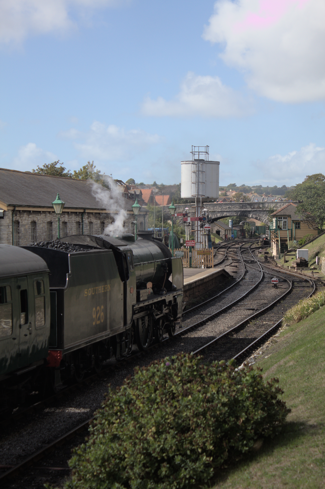
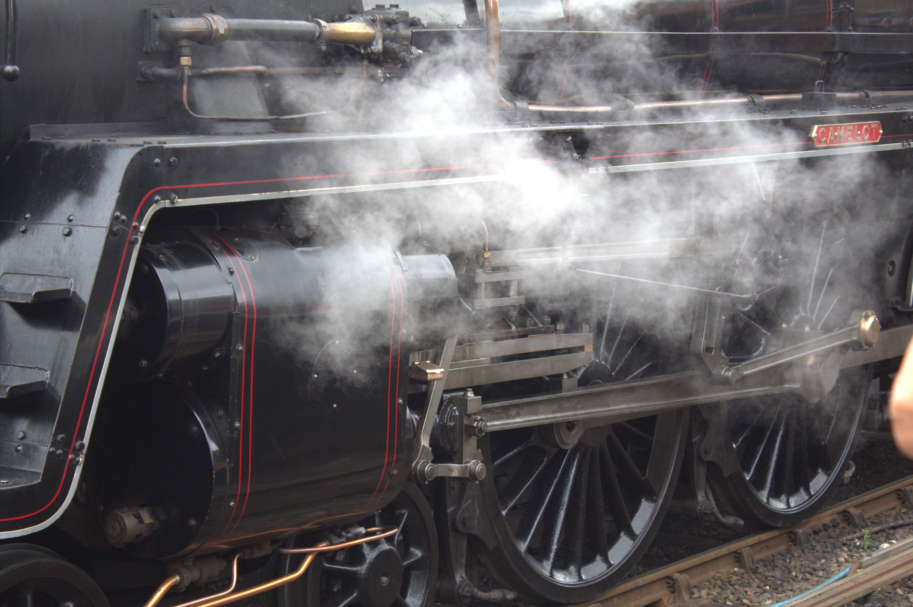
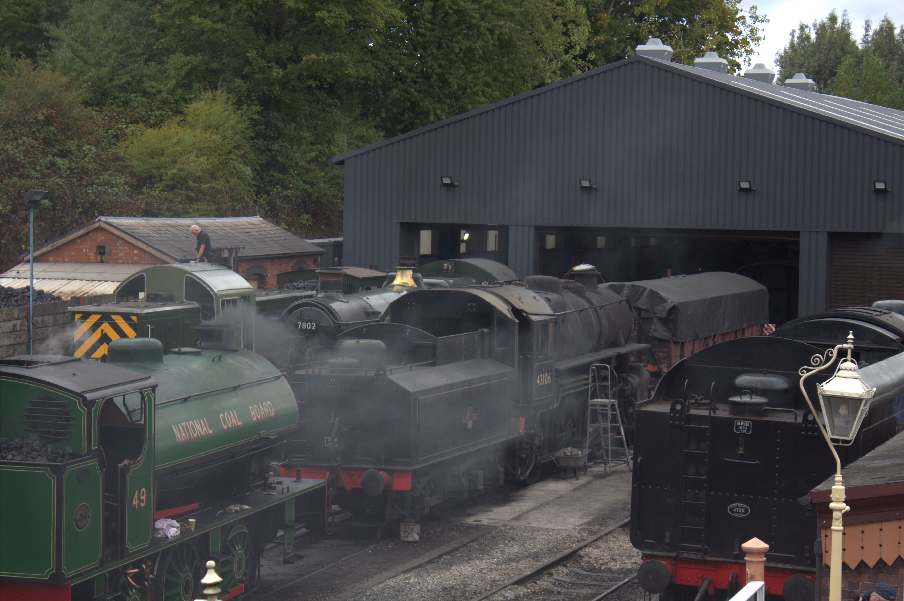
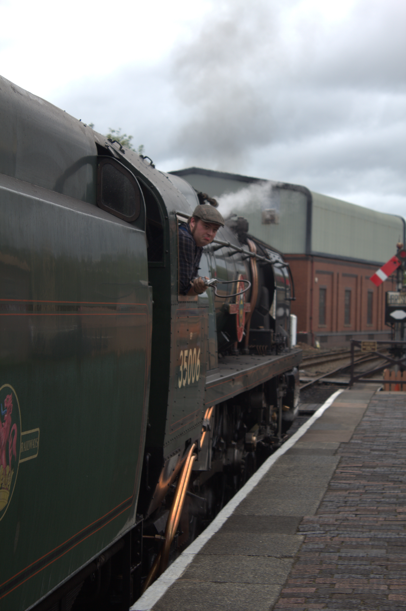
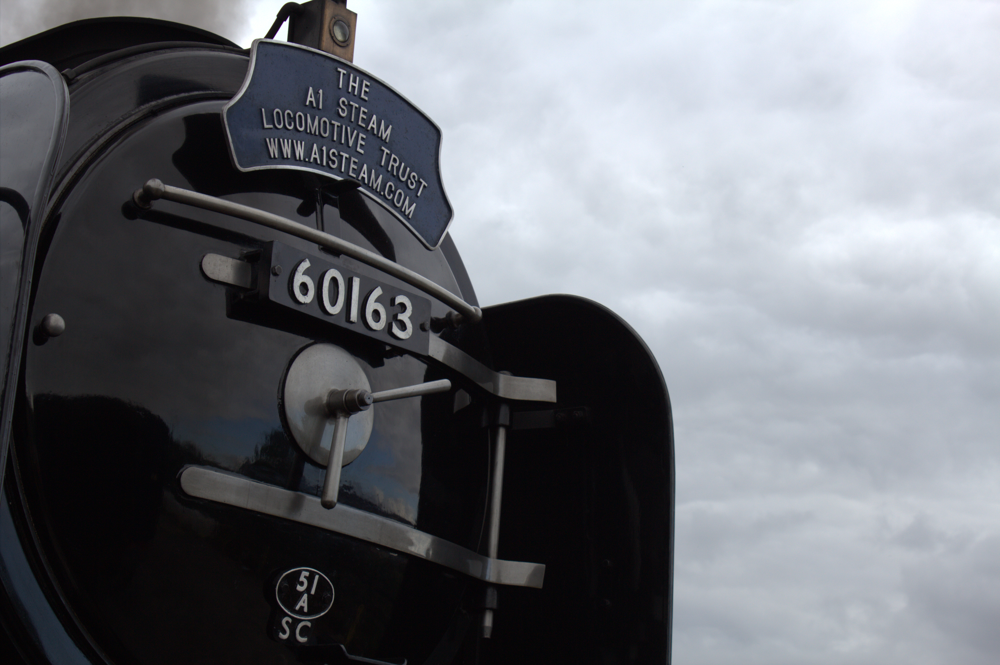
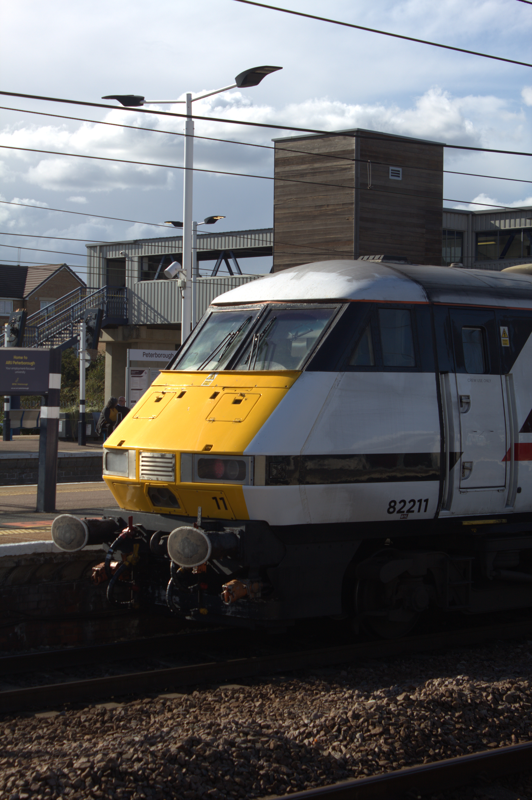
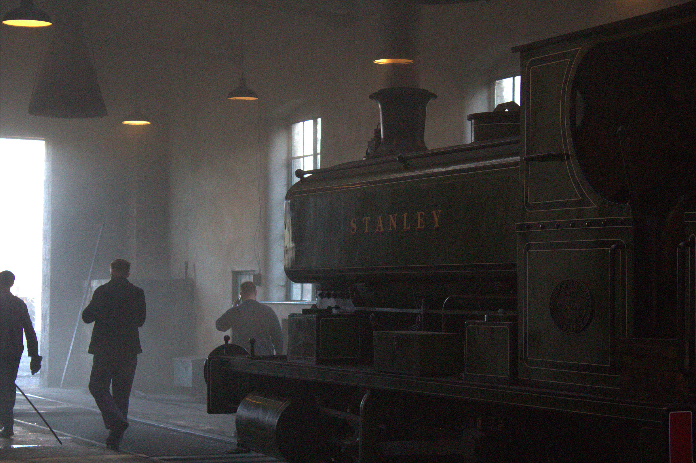
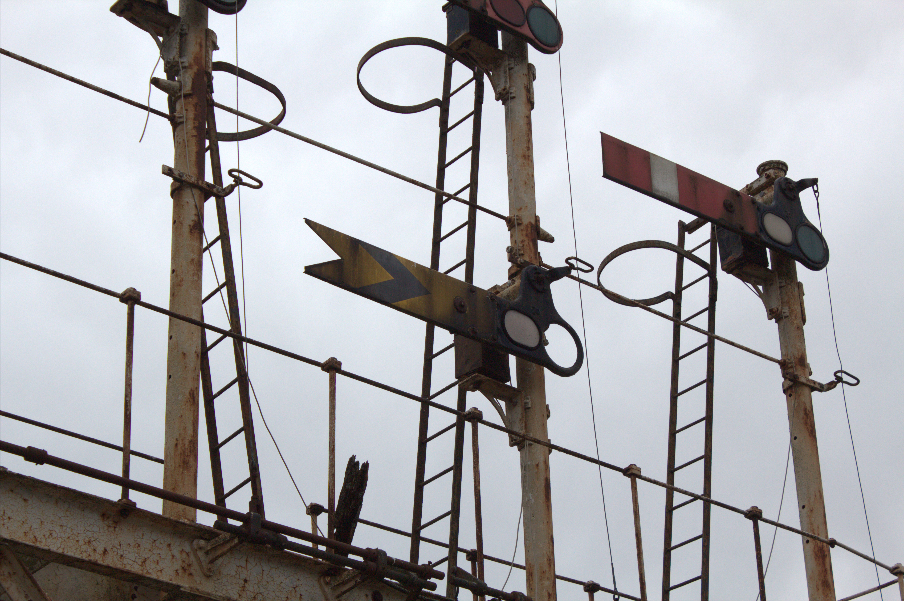
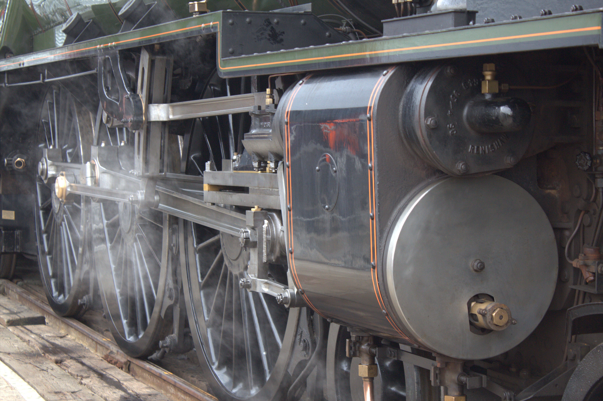
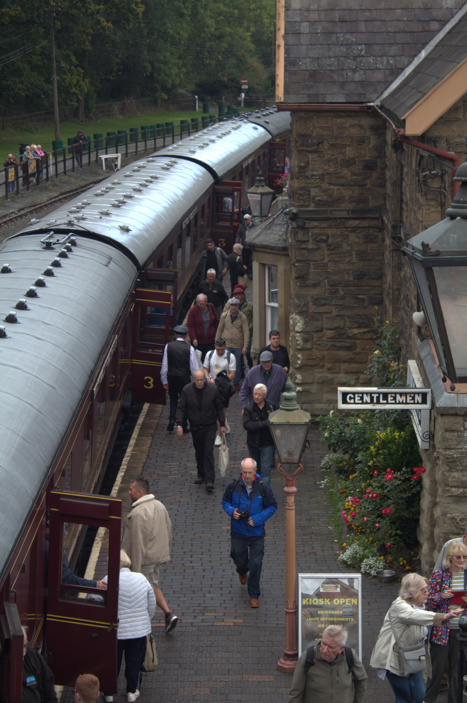
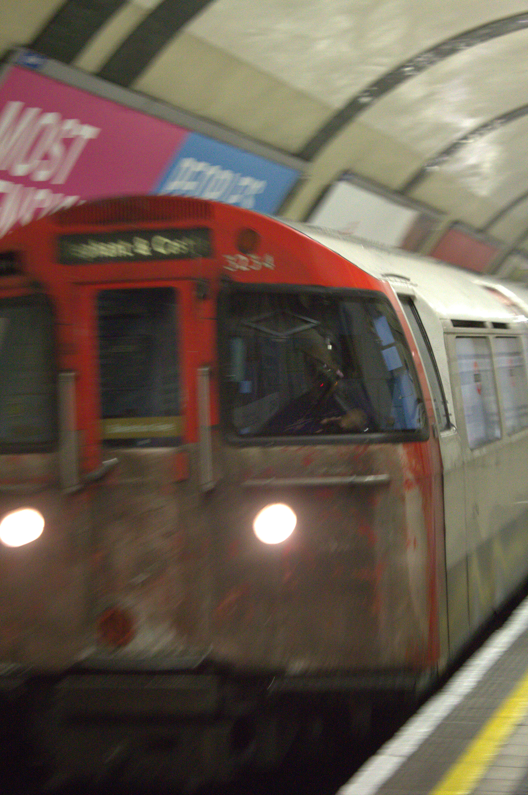
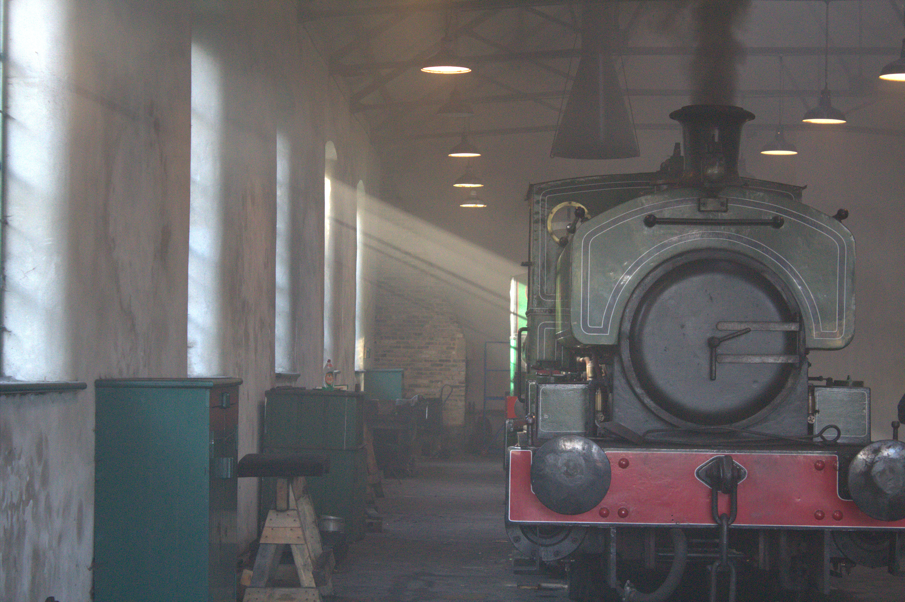
Railways I visited
My original plan was to visit the whole of Great Britain, but I was only there for a month which was not enough time to get me up to Scotland. There is so much to do in Britain its actually insane. I could probably spend six months in London alone. Here is a list (in order) of all heritage railways I visited. Many of them were visited on gala weekends.
- Swanage Railway
- Nene Valley Railway
- Buckinghamshire Railway Centre
- Talyllyn Railway
- Ffestiniog & Welsh highland railway
- Severn Valley Railway
- Epping Ongar Railway
- Isle Of Wight Steam Railway
- Beamish (trams but close enough)
- Keighley & Worth Valley Railway
- North Yorkshire Moors Railway
- Locomotion (like 3 metres of track (still counts))
- Tanfield Railway
- Bluebell Railway
- West Somerset Railway
I cannot pick a favourite because all were so good for different reasons, but I remembered the most from the KWVR so I think that shall be my favourite. My original list had over one hundred railways/activities, so it was shortened heaps.
Getting around
In England I used the railway for everything (except for the bus like one or two times) Obviously the tube was used extensively too. For the first few days that I arrived there was a tube strike. Luckily, I was staying in Whitechapel which has an Elizabeth line station. When I went to the isle of wight I went on a hovercraft which was really cool. To get to France I used the channel tunnel. In Wales I used a car to save time (railway strat was a mega detour (cannot afford to lose any time)) When in Paris I used the Paris metro. I flew into Heathrow, and I flew out from Paris. Both trips needed me to stop in singapore to switch aeroplanes.
Stuff I purchased
My entire suitcase was fully bursting at the seams when I arrived back in nz. Whilst at all of the heritage railways they add had heaps of model railway stuff for sale at insanely cheap prices. As well as second hand stuff from railways, I also got a few new things. They still use cash quite a lot in Britain so it was pretty fun to use it again. The last time I properly used cash in nz I was probably only like nine or something.
Fr*nce
My favourite movie is La La Land. In France they were performing La La Land in concert (where they have a band playing the music with irl instruments as you watch the film) in Paris, so I went over there to see it. Seeing La La Land was one of the coolest experiences in my life though. I brought a t-shirt and a signed poster.
I am not trolling but France was even more dingier than Birmingham somehow. The people were really nice though which was kinda strange.
The Paris Metro was so pathetic. The tickets were legit paper and the stations are so dingy and horribly laid out. The trains are yuck (some were double decker though which was cool) and it was one euro to use the toilet (acting like its victorian london for some reason) The main thing that made the Paris metro so unusable was they have like zero interchange stations.
I was only in Paris for like two days (1.5 days too much ngl) and during that went to Louvre. Pretty much the week after it was robbed. I also went up the Eiffel Tower and went to some other place that I forgot the name of.
This was my first and only time in France.